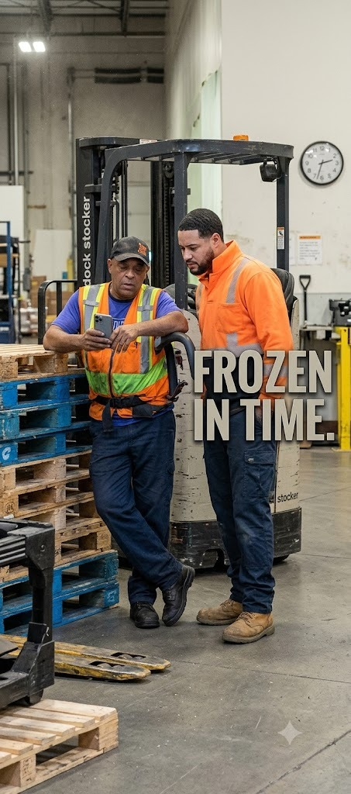

It started, as most things at Dock 8265 do, with someone noticing something and mentioning it to the wrong person at the wrong time. By midweek, it was the only thing anyone on the floor wanted to talk about.
According to multiple accounts, employees Ernest and Orlando were seen standing near the same station for what witnesses describe as an unusually long stretch, both looking down at their phones without moving. Coworkers say the pause was long enough to draw attention from passing staff, several of whom slowed down to see if something was actually wrong.

The team lead's comment, made in passing, has since become the unofficial headline of the incident. Staff have adopted "frozen in time" as shorthand for the moment, and it's already being used well beyond its original context.
Neither Ernest nor Orlando has issued a statement. Coworkers describe the two as otherwise reliable and unbothered by the attention, with one source noting that "they didn't even look up when people started talking about it," which, depending on who you ask, either undercuts or completely confirms the original report.
Dock 8265 will continue to monitor the situation and update this story if either party decides to comment on the record, or if it happens again.